Youth for Seva is a nation wide volunteering organisation that aims to support schools, destitute shelters, hospitals and other organizations in the social sector to. YFS aims to create positive change agents in the society, through the culture of volunteering.

Youth for Seva is a nation wide volunteering organisation that aims to support schools, destitute shelters, hospitals and other organizations in the social sector to. YFS aims to create positive change agents in the society, through the culture of volunteering.
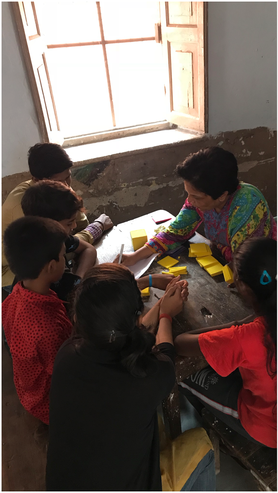I use games and experential learning techniques to teach the concepts of science and mathematics.


 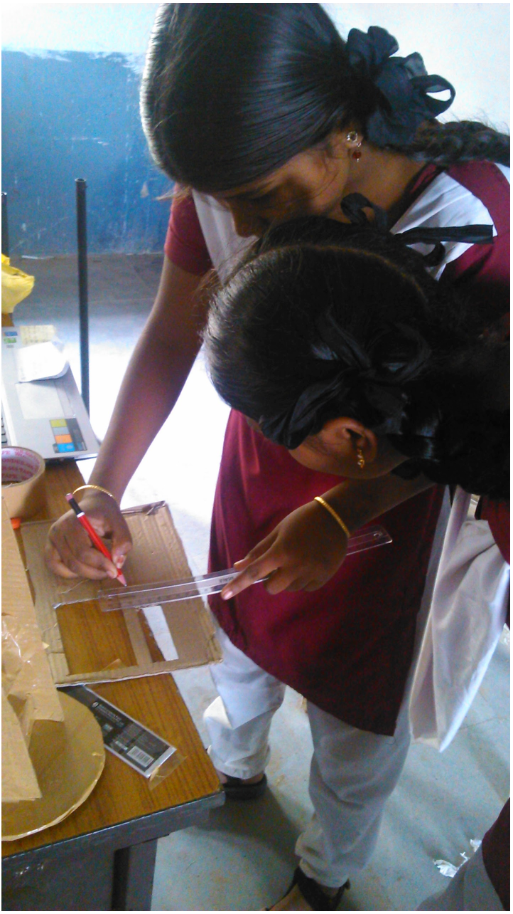
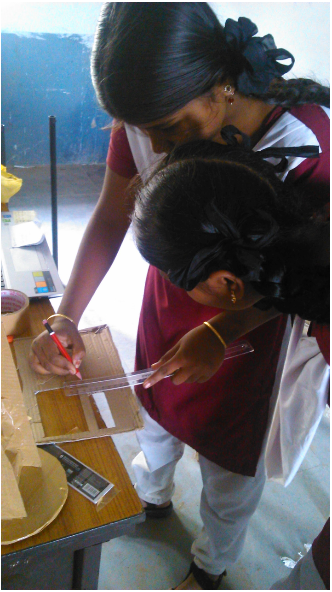

Every year Youth for Seva organizes CHIGURU, an event for students to showcase their talents. Various competitions are conducted in the cultural, academics and sports domains. Over 150 schools from all over the city participate in CHIGURU. I help participants by training them for these competitions. I organize workshops to help them understand the rules of the competitions, get better ideas for their performances and practice for the final competition.
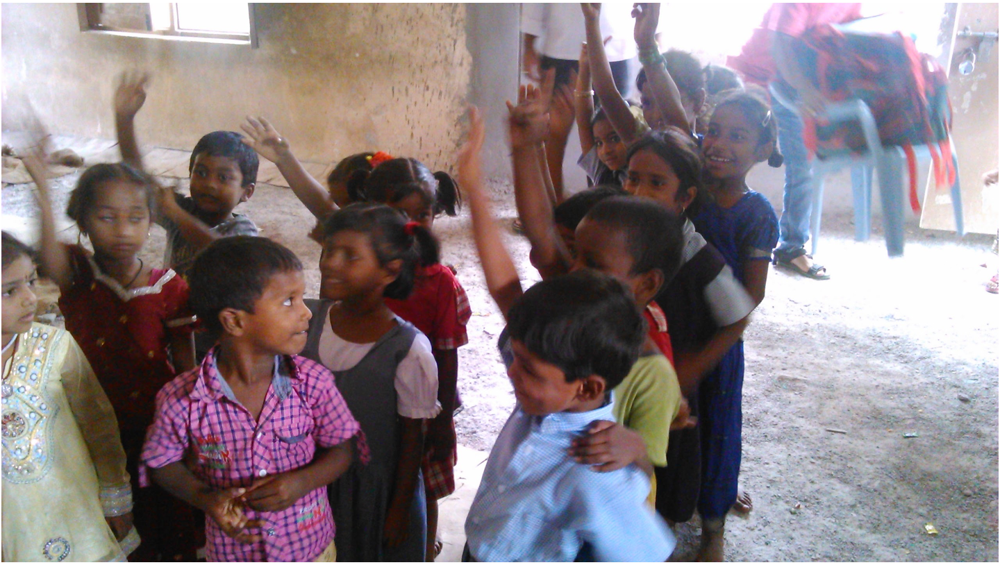
 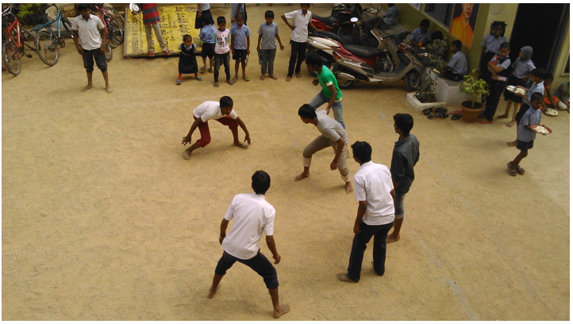
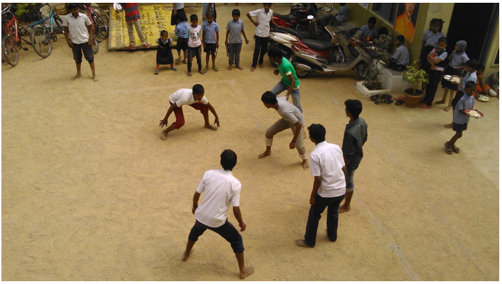

Many students drop out of school due to lack of resources like school bags, books and basic stationery. Every year Youth for Seva raises funds to make school kits that have this basic stationery. We distribute these school kits to kids whose families can’t afford to buy this material.


 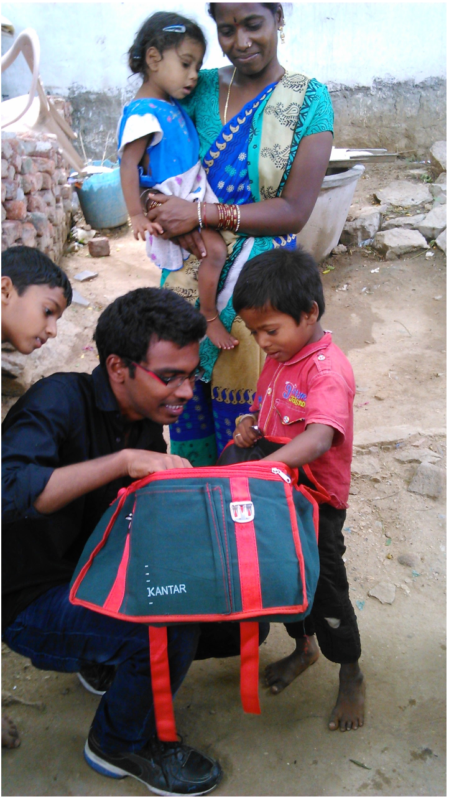
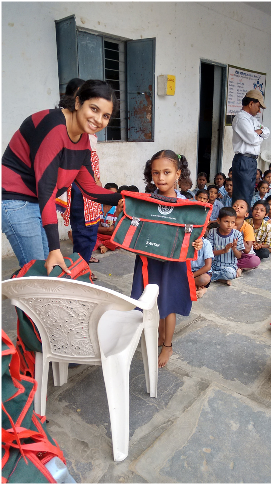
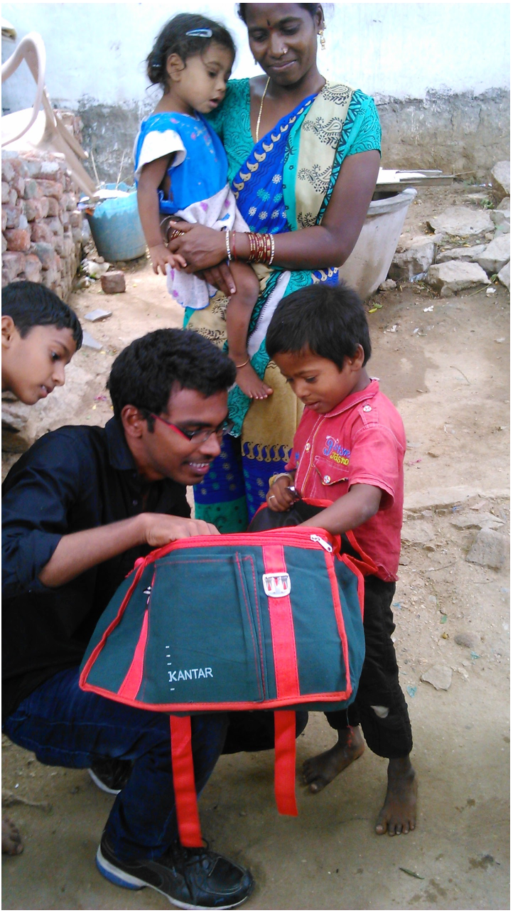
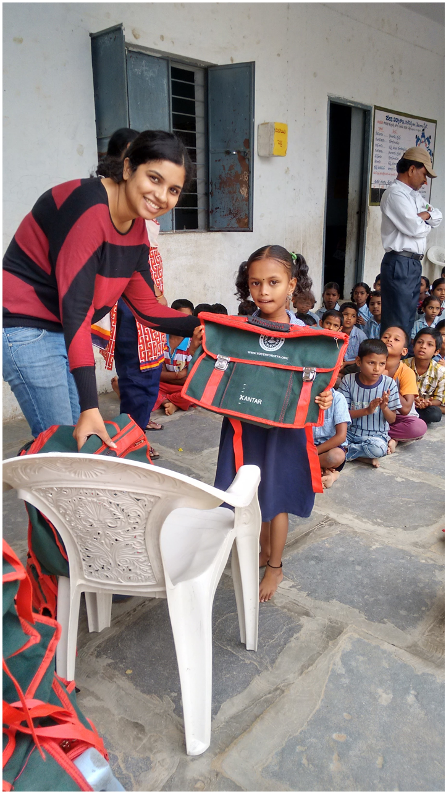

 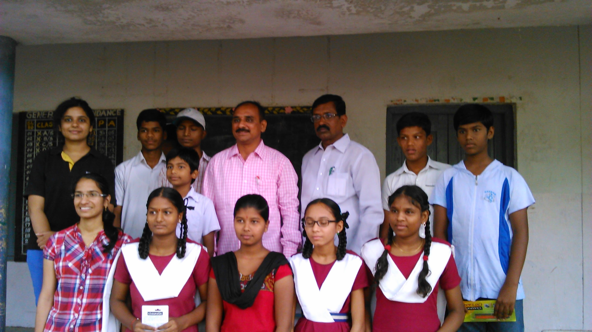
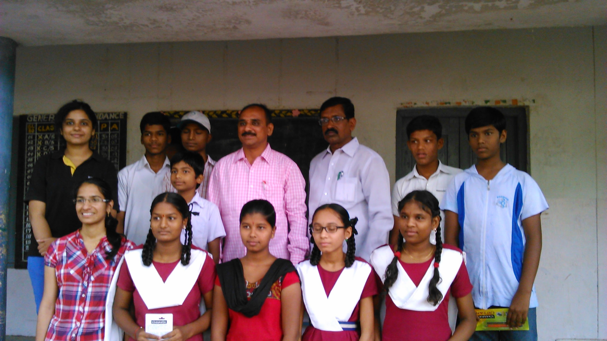